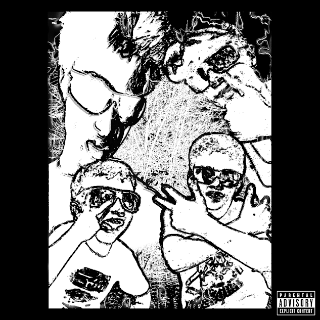

UNRELEASED & LOST MEDIA ARCHIVE
This archive documents cancelled, unreleased, abandoned, and otherwise unavailable projects associated with Krazy Records, Wack Muzik, Krack Hed, and related artists.

Halloween Special
| Artist | The Halloween Killaz |
|---|---|
| Type | LP |
| Development Began | 2025 |
| Cancelled | 2025 |
| Status | Cancelled |
| Format(s) | Digital/Compact disc (CD) |
Description
Originally intended to become the debut album by The Halloween Killaz. The project was cancelled after the group became inactive before the album was completed.

A Tale of 4 Hobo'$
| Artist | BoeDaHobo/Krack Hed |
|---|---|
| Type | LP |
| Development Began | 2024 |
| Last Worked On | 2026 |
| Status | Unreleased |
| Format(s) | Digital/Compact Disc (CD) |
Description
This Lp was the first ever album/project that was started and began by Krack Hed, Who originally went by BoedaHobo at the time, this project would have been a album featuring all 3 of Boe's brothers, including Rednek Max, Biggie Ben, and Mackin' Mick.

Krazy Mix: Unfit 4 Release
| Artist | Krack Hed |
|---|---|
| Type | EP |
| Development Began | 2026 |
| Last Worked On | 2026 |
| Status | Cancelled |
| Format(s) | Digital/Compact Disc (CD) |
Description
This EP was going to be an Outtake Ep of tracks that didnt make it to the LP "Krazy Mix Volume 1" but the tracks that didnt make it to Volume 1 wiil most likely go to Volume 2, or a Completely different Album.